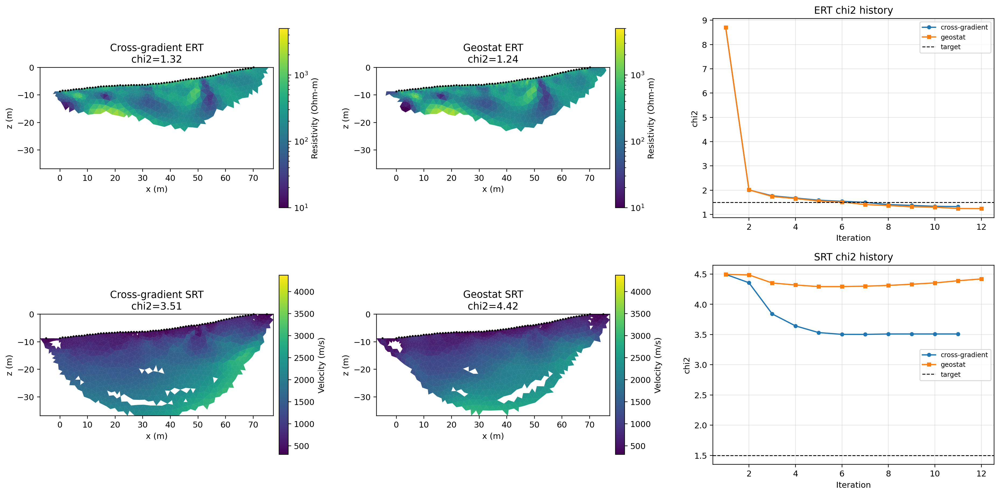

Note
Go to the end to download the full example code.
Joint ERT-SRT Inversion: Cross-Gradient vs Geostatistics#
This example compares two joint inversion strategies using the same ERT/SRT data:
Cross-gradient joint inversion (smoothness + cross-gradient coupling).
Geostatistical joint inversion (geostatistics-focused, cross-gradient off).
Error inputs use ert_relative_error / ert_absolute_u_error and
srt_relative_error / srt_absolute_error for both modalities.
import os
import sys
from typing import Any
import matplotlib.pyplot as plt
import numpy as np
import pygimli as pg
import pygimli.physics.traveltime as tt
from pygimli.physics import ert
# Setup package path for development
try:
current_dir = os.path.dirname(os.path.abspath(__file__))
except NameError:
current_dir = os.getcwd()
if (not os.path.exists(os.path.join(current_dir, "data")) and
os.path.exists(os.path.join(current_dir, "examples", "data"))):
current_dir = os.path.join(current_dir, "examples")
parent_dir = os.path.dirname(current_dir)
if parent_dir not in sys.path:
sys.path.append(parent_dir)
from PyHydroGeophysX.inversion import JointERTSRTInversion
Configure Inputs and Output Paths#
def _as_bool_env(name, default=False):
val = os.environ.get(name, str(int(default))).strip().lower()
return val in {"1", "true", "yes", "y", "on"}
output_dir = os.path.join(current_dir, "results", "joint_inversion_compare")
os.makedirs(output_dir, exist_ok=True)
ert_file = os.path.join(current_dir, "data", "ERT", "Bert", "fielddataline2.dat")
srt_file = os.path.join(current_dir, "data", "Seismic", "srtfieldline2.dat")
if not os.path.exists(ert_file):
raise FileNotFoundError(f"ERT file not found: {ert_file}")
if not os.path.exists(srt_file):
raise FileNotFoundError(f"SRT file not found: {srt_file}")
# Load once for plotting sensors.
ert_data = ert.load(ert_file)
srt_data = tt.load(srt_file)
Define the Two Joint-Inversion Cases#
Both cases use the same data, mesh settings, bounds, and stopping criteria. Only the structural coupling strategy changes.
max_iterations = int(os.environ.get("PHGX_JOINT_MAX_ITER", "20"))
verbose = _as_bool_env("PHGX_JOINT_VERBOSE", default=True)
# Common parameters:
common_params = {
"max_iterations": max_iterations,
"target_chi2": 1.5,
"convergence_tolerance": 0.01,
"solver": "scipy_lsmr",
"solver_maxiter": 300,
"solver_tol": 1e-8,
"line_search_maxiter": 20,
"line_search_c": 1e-4,
"ert_use_derived_rhoa": True,
"ert_relative_error": 0.05,
"ert_absolute_u_error": 0.0,
"srt_relative_error": 0.05,
"srt_absolute_error": 0.0,
"ert_bounds": (10.0, 5000.0),
"srt_velocity_bounds": (300.0, 6000.0),
"vTop": 500.0,
"vBottom": 4500.0,
"mesh_quality": 34,
"paraDX": 0.5,
"paraMaxCellSize": 3.0,
"boundaryMaxCellSize": 3000.0,
"paraBoundary": 7.2,
"smooth": (2, 2),
"balanceDepth": True,
"auto_disable_cross_gradient_first_iteration": True,
"verbose": verbose,
}
cases = {
"cross_gradient_joint": {
"regularization_mode": "smoothness",
"lambda_ert": 10.0,
"lambda_srt": 10.0,
"lambda_cg_ert": 80.0,
"lambda_cg_srt": 80.0,
"cross_gradient_mode": "direct",
"cross_gradient_source": "smoothness",
"cross_gradient_threshold": 0.01,
},
"geostat_joint": {
# Geostatistical joint inversion: smoothness Wm + geostatistical
# covariance for cross-gradient neighborhood (RCM).
# Uses "spatial" mode to preserve continuous covariance weights
# (legacy: L_cgr=5000, L_cgs=40000).
"regularization_mode": "smoothness",
"lambda_ert": 10.0,
"lambda_srt": 10.0,
"lambda_cg_ert": 5000.0,
"lambda_cg_srt": 5000.0,
"cross_gradient_mode": "spatial",
"cross_gradient_source": "geostat",
"cross_gradient_corr_lengths": (4.0, 4.0),
"cross_gradient_threshold": 0.01,
},
}
Define a Reusable Case Runner#
def run_case(
case_name: Any,
case_params: Any,
) -> Any:
"""Run one joint ERT-SRT inversion configuration and save its outputs.
Args:
case_name: Label for the inversion scenario.
case_params: Scenario-specific inversion parameters.
Returns:
Dictionary containing the result object, saved arrays, and run metadata.
"""
print("")
print(f"==================== Running case: {case_name} ====================")
run_params = dict(common_params)
run_params.update(case_params)
inv = JointERTSRTInversion(
ert_data=ert_file,
srt_data=srt_file,
**run_params,
)
try:
result = inv.run()
except RuntimeError as exc:
if "GeostatisticConstraintsMatrix" in str(exc):
raise RuntimeError(
"Geostatistical constraints require a PyGIMLi build with "
"GeostatisticConstraintsMatrix support."
) from exc
raise
case_dir = os.path.join(output_dir, case_name)
os.makedirs(case_dir, exist_ok=True)
ert_model = np.asarray(result.ert_resistivity, dtype=float).ravel()
srt_model = np.asarray(result.srt_velocity, dtype=float).ravel()
chi2_ert_hist = np.array([it["chi2_ert"] for it in result.iteration_history], dtype=float)
chi2_srt_hist = np.array([it["chi2_srt"] for it in result.iteration_history], dtype=float)
np.save(os.path.join(case_dir, "joint_ert_resistivity.npy"), ert_model)
np.save(os.path.join(case_dir, "joint_srt_velocity.npy"), srt_model)
np.save(os.path.join(case_dir, "joint_ert_chi2_history.npy"), chi2_ert_hist)
np.save(os.path.join(case_dir, "joint_srt_chi2_history.npy"), chi2_srt_hist)
summary_file = os.path.join(case_dir, "summary.txt")
with open(summary_file, "w", encoding="utf-8") as f:
f.write(f"Case: {case_name}\n")
f.write(f"ERT file: {ert_file}\n")
f.write(f"SRT file: {srt_file}\n")
f.write(f"Iterations: {len(result.iteration_history)}\n")
f.write(f"Final ERT chi2: {result.chi2_ert:.6f}\n")
f.write(f"Final SRT chi2: {result.chi2_srt:.6f}\n")
f.write("Parameters:\n")
for key in sorted(run_params.keys()):
f.write(f" {key}: {run_params[key]}\n")
print(f"Final ERT chi2 ({case_name}): {result.chi2_ert:.4f}")
print(f"Final SRT chi2 ({case_name}): {result.chi2_srt:.4f}")
print(f"Saved: {case_dir}")
return {
"name": case_name,
"result": result,
"params": run_params,
"ert_model": ert_model,
"srt_model": srt_model,
"chi2_ert_hist": chi2_ert_hist,
"chi2_srt_hist": chi2_srt_hist,
}
Run Both Inversions#
run_outputs = {name: run_case(name, cfg) for name, cfg in cases.items()}
cross = run_outputs["cross_gradient_joint"]
geo = run_outputs["geostat_joint"]
Prepare Coverage-Aware Plotting Helpers#
def ert_cov_mask(
result: Any,
) -> Any:
"""ERT coverage mask: log10(covTrans/paramSizes) > -1."""
cov = result.ert_coverage
if cov is None:
return None
return cov > -1
def srt_cov_mask(
result: Any,
) -> Any:
"""SRT coverage mask: standardizedCoverage (already 0/1)."""
cov = result.srt_coverage
if cov is None:
return None
return cov
def _draw_mesh(ax, mesh, data, cov, cmap, vmin, vmax, label, log=False):
"""Draw model on ax using drawModel + addCoverageAlpha + colorbar."""
gci = pg.viewer.mpl.drawModel(ax, mesh, data,
cMap=cmap, cMin=vmin, cMax=vmax,
logScale=log)
if cov is not None:
pg.viewer.mpl.addCoverageAlpha(gci, cov)
cb = plt.colorbar(gci, ax=ax, orientation="vertical", shrink=0.9, pad=0.02)
cb.set_label(label)
return gci, cb
Compare Models and Convergence Histories#
from palettable.lightbartlein.diverging import BlueDarkRed18_18
ert_cmap = "Spectral_r"
srt_cmap = BlueDarkRed18_18.mpl_colormap
ert_vmin = float(min(np.min(cross["ert_model"]), np.min(geo["ert_model"])))
ert_vmax = float(max(np.max(cross["ert_model"]), np.max(geo["ert_model"])))
srt_vmin = float(min(np.min(cross["srt_model"]), np.min(geo["srt_model"])))
srt_vmax = float(max(np.max(cross["srt_model"]), np.max(geo["srt_model"])))
fig, axes = plt.subplots(2, 3, figsize=(17, 8.5))
# --- Row 0: ERT resistivity ---
_draw_mesh(axes[0, 0], cross["result"].mesh, cross["ert_model"],
ert_cov_mask(cross["result"]), ert_cmap, ert_vmin, ert_vmax,
"Resistivity (Ohm-m)", log=True)
pg.viewer.mpl.drawSensors(axes[0, 0], ert_data.sensors(), diam=0.4, facecolor="k", edgecolor="k")
axes[0, 0].set_title(f"Cross-gradient ERT\nchi2={cross['result'].chi2_ert:.2f}")
axes[0, 0].set_xlabel("x (m)")
axes[0, 0].set_ylabel("z (m)")
_draw_mesh(axes[0, 1], geo["result"].mesh, geo["ert_model"],
ert_cov_mask(geo["result"]), ert_cmap, ert_vmin, ert_vmax,
"Resistivity (Ohm-m)", log=True)
pg.viewer.mpl.drawSensors(axes[0, 1], ert_data.sensors(), diam=0.4, facecolor="k", edgecolor="k")
axes[0, 1].set_title(f"Geostat ERT\nchi2={geo['result'].chi2_ert:.2f}")
axes[0, 1].set_xlabel("x (m)")
axes[0, 1].set_ylabel("z (m)")
axes[0, 2].plot(
np.arange(1, len(cross["chi2_ert_hist"]) + 1),
cross["chi2_ert_hist"],
"o-",
lw=1.5,
ms=4,
label="cross-gradient",
)
axes[0, 2].plot(
np.arange(1, len(geo["chi2_ert_hist"]) + 1),
geo["chi2_ert_hist"],
"s-",
lw=1.5,
ms=4,
label="geostat",
)
axes[0, 2].axhline(
common_params["target_chi2"],
color="k",
ls="--",
lw=1.0,
label="target",
)
axes[0, 2].set_title("ERT chi2 history")
axes[0, 2].set_xlabel("Iteration")
axes[0, 2].set_ylabel("chi2")
axes[0, 2].grid(True, alpha=0.3)
axes[0, 2].legend(loc="best", fontsize=8)
# --- Row 1: SRT velocity ---
_draw_mesh(axes[1, 0], cross["result"].mesh, cross["srt_model"],
srt_cov_mask(cross["result"]), srt_cmap, srt_vmin, srt_vmax,
"Velocity (m/s)", log=False)
pg.viewer.mpl.drawSensors(axes[1, 0], srt_data.sensors(), diam=0.4, facecolor="k", edgecolor="k")
axes[1, 0].set_title(f"Cross-gradient SRT\nchi2={cross['result'].chi2_srt:.2f}")
axes[1, 0].set_xlabel("x (m)")
axes[1, 0].set_ylabel("z (m)")
_draw_mesh(axes[1, 1], geo["result"].mesh, geo["srt_model"],
srt_cov_mask(geo["result"]), srt_cmap, srt_vmin, srt_vmax,
"Velocity (m/s)", log=False)
pg.viewer.mpl.drawSensors(axes[1, 1], srt_data.sensors(), diam=0.4, facecolor="k", edgecolor="k")
axes[1, 1].set_title(f"Geostat SRT\nchi2={geo['result'].chi2_srt:.2f}")
axes[1, 1].set_xlabel("x (m)")
axes[1, 1].set_ylabel("z (m)")
axes[1, 2].plot(
np.arange(1, len(cross["chi2_srt_hist"]) + 1),
cross["chi2_srt_hist"],
"o-",
lw=1.5,
ms=4,
label="cross-gradient",
)
axes[1, 2].plot(
np.arange(1, len(geo["chi2_srt_hist"]) + 1),
geo["chi2_srt_hist"],
"s-",
lw=1.5,
ms=4,
label="geostat",
)
axes[1, 2].axhline(
common_params["target_chi2"],
color="k",
ls="--",
lw=1.0,
label="target",
)
axes[1, 2].set_title("SRT chi2 history")
axes[1, 2].set_xlabel("Iteration")
axes[1, 2].set_ylabel("chi2")
axes[1, 2].grid(True, alpha=0.3)
axes[1, 2].legend(loc="best", fontsize=8)
plt.tight_layout()
fig_path = os.path.join(output_dir, "Ex_joint_inversion_fig_01.png")
fig.savefig(fig_path, dpi=220, bbox_inches="tight")
plt.show()
The model panels compare recovered ERT resistivity and SRT velocity, while the history panels show how each coupling strategy approaches the target chi-squared value.


Save the Comparison Summary#
comparison_file = os.path.join(output_dir, "comparison_summary.txt")
with open(comparison_file, "w", encoding="utf-8") as f:
f.write("Joint inversion comparison\n")
f.write("==========================\n")
for name, out in run_outputs.items():
f.write(f"{name}\n")
f.write(f" final ERT chi2: {out['result'].chi2_ert:.6f}\n")
f.write(f" final SRT chi2: {out['result'].chi2_srt:.6f}\n")
f.write(f" iterations: {len(out['result'].iteration_history)}\n")
print("")
print("Comparison complete.")
print(f"Cross-gradient final chi2: ERT={cross['result'].chi2_ert:.4f}, SRT={cross['result'].chi2_srt:.4f}")
print(f"Geostat final chi2: ERT={geo['result'].chi2_ert:.4f}, SRT={geo['result'].chi2_srt:.4f}")
print(f"Saved figure: {fig_path}")
print(f"Saved comparison summary: {comparison_file}")
print(f"Saved outputs to: {output_dir}")